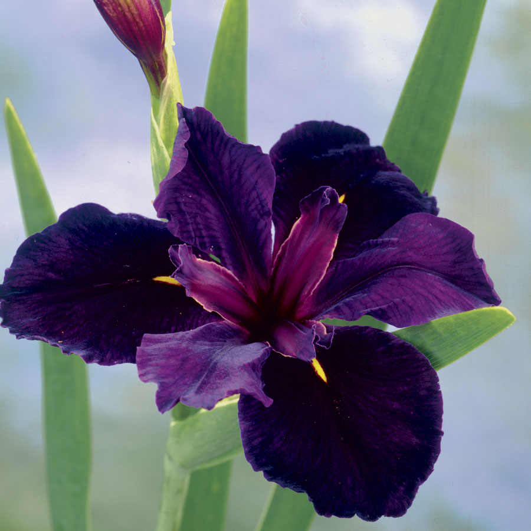

The Black Iris, is a small plant of the rarest and most beautiful flowers of the earth.

The National Flower in Jordan, you can find the Black Iris in many locations in Jordan, including Zobia, Ajloun Mountains.
Due to the short seasonal life, this flower is rare. It follows the abundance of rain water, which is itself a little abundant in Jordan. After the winter rainy season in February and March, the wild iris blossoms begin to appear in the spring.